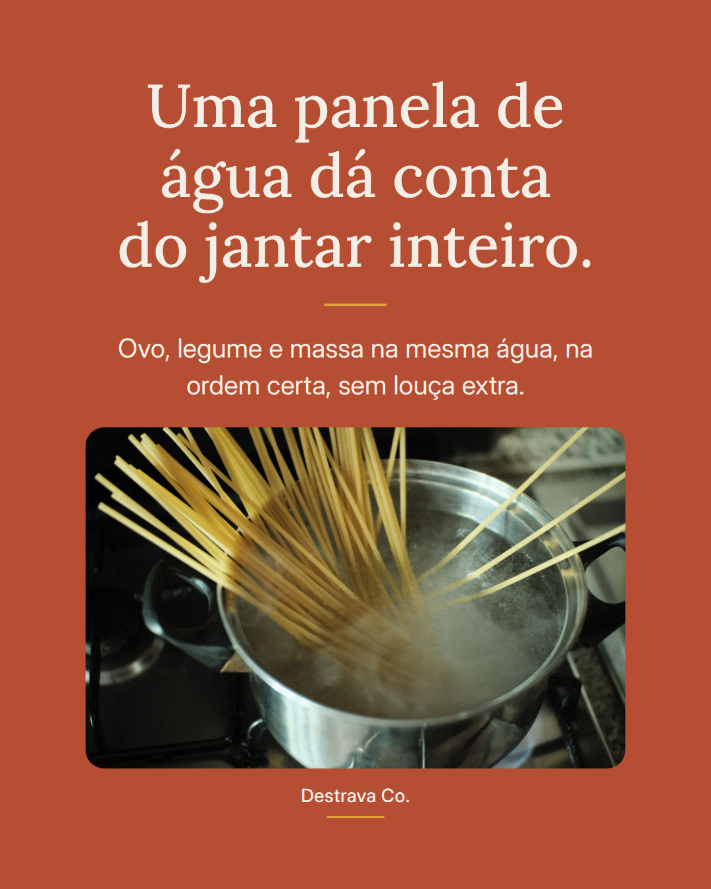
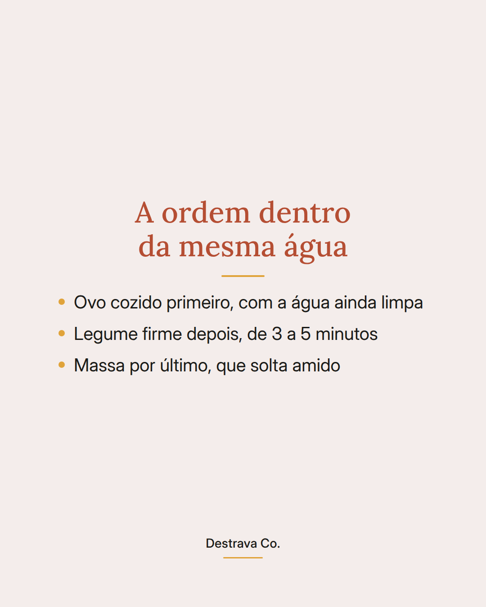
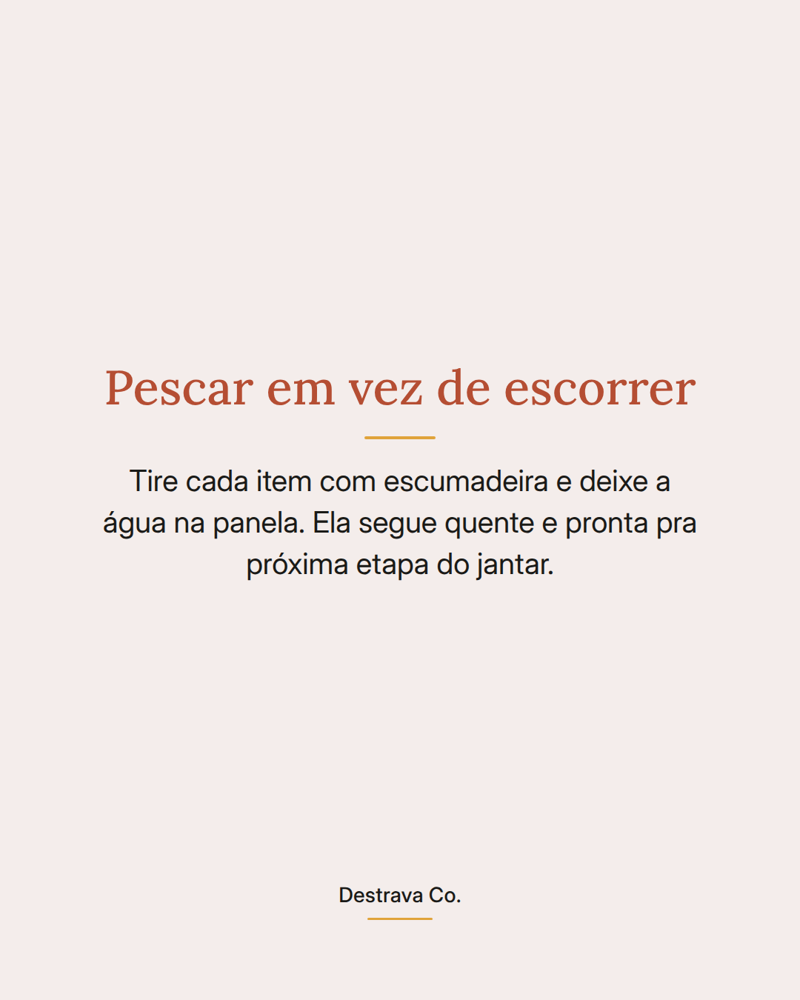
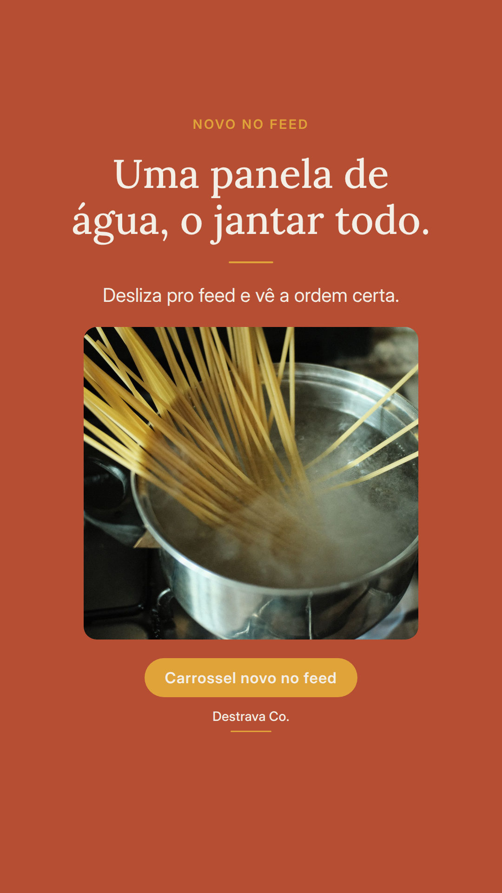
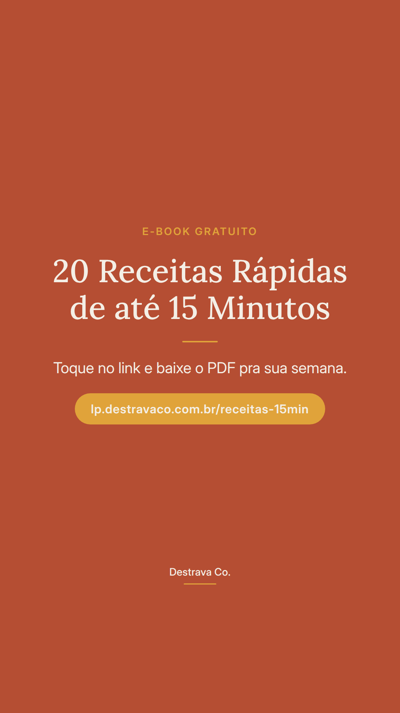

Uma panela de água pode cozinhar o jantar inteiro, em sequência, sem empilhar louça.
A ordem é simples: ovo primeiro, legume firme depois, massa por último.
O truque é não escorrer. Pesca cada item com a escumadeira e a água continua quente ali, pronta pra próxima etapa. Enquanto o ovo esfria, o legume cozinha. Enquanto a massa termina, você já monta a tigela.
No fim, é só juntar tudo com azeite, limão e queijo ralado. Jantar completo, uma panela suja.
Salva pra lembrar da ordem no dia corrido e manda pra quem odeia lavar panela. Se quiser mais ideias assim, o PDF com 20 receitas rápidas até 15 min te espera.